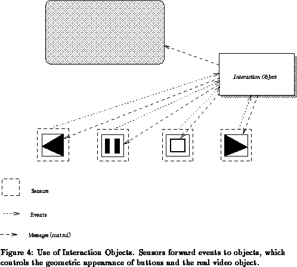

Previous: Synchronization.
Up: Combination Objects
Next: Constraint Management.
Previous Page: Synchronization.
Next Page: Constraint Management.
Previous: Synchronization.
Up: Combination Objects
Next: Constraint Management.
Previous Page: Synchronization.
Next Page: Constraint Management.
Multimedia applications are very often highly interactive; it is therefore essential to give very good tools to construct complex interaction scenarios involving MADE objects.
The MADE project does not aim at developing a completely new user interface management system. Instead, MADE objects may be embedded into an existing user interface environment, like the Athena Widget set of X Window System, the Motif toolkit, MS-Windows or, in the future, Windows--NT. Nevertheless, not all user interaction can be adequately managed by these tools; many complex interaction scenarios will involve MADE objects directly (eg, for direct manipulation). The scheme developed in MADE for achieving these complex interaction scenarios is based on the notion of sensors and associated interaction objects.
Sensors are best understood in the context of graphics: in this context they define sensitive areas on the screen, which can be ``activated'' by external interaction, typically mouse events. Sensors are associated with MADE objects via interaction objects. In effect, they provide a sensitive region which acts as a focal point for interaction with these objects. For some objects, sensors cannot be attached to the object itself, but, instead, a visual representation of the object is used, in the form of graphics object. This might be the case, for some sensors attached to audio objects. The notion of sensor is general enough to accommodate regions involving higher dimensions including time. It can also be applied in association with interaction input devices that provide non--geometric input measures, such as audio input devices, pressure sensitive devices, etc.

Sensors forward events to interaction objects; it is part of the sensor's initialization procedure to decide which interaction object it is connected to. The interaction objects react on these events, following some patterns which describes the behaviour of the interaction object. Several sensors may be connected to the same interaction object.
In very simple cases, interaction objects perform straightforward and predefined tasks (like, for example, reshaping a graphics object). In other cases, much greater complexity may be required, perhaps providing control over several MADE objects and receiving events from several sensors (eg, the video control board depicted in Figure 2 reacts on the sensors of the graphical objects describing the four push--buttons, may control the visual appearance of these buttons and, of course, controls the video object proper; see also Figure 4). To describe such complex interaction behaviour, MADE introduces a type of interaction object that implements a general finite state machine (see [11]). These objects have a default finite state machine for a specific interaction scenario; however, the user can also assign a script to an interaction object, which, conceptually, includes a complete scripting interpreter (see also §4.1.2). Such a script automatically overrides the default behaviour of the interaction object. This high degree of openness, with respect to the end--user, is a very valuable feature of the MADE interaction management.